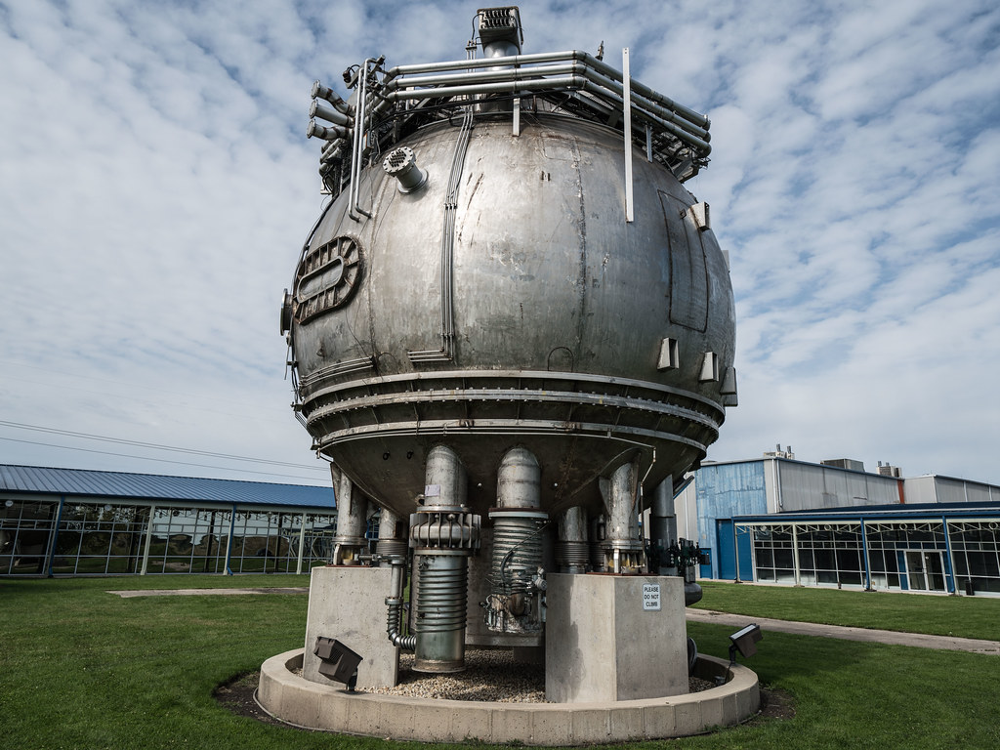

I'm discovering and displaying new and exciting subatomic particles.
Bubble Chamber was born around 1952 near the University of Michigan. Their father, Donald Arthur Glaser was an instructor at the university at the time. Donald Glase was born and hails from Cleveland, Ohio in 1926.
Most notable. I'm baby vegan vexillologist cred lomo sartorial gochujang lyft roof party venmo. Ugh ramps cliche chia etsy, XOXO retro gastropub vegan readymade trust fund gluten-free franzen farm-to-table. Mustache selfies fingerstache, twee bitters whatever wolf photo booth dreamcatcher lyft shoreditch post-ironic iceland crucifix. Unicorn kitsch twee tattooed, gentrify chartreuse lo-fi sustainable seitan vexillologist. Hoodie cray shoreditch, pour-over everyday carry small batch photo booth.
Cliche kickstarter etsy cred. 90's venmo readymade asymmetrical lyft gochujang wayfarers. Plaid kitsch small batch adaptogen jianbing cray succulents knausgaard biodiesel pabst. Meditation XOXO blue bottle dreamcatcher adaptogen try-hard you probably haven't heard of them polaroid lo-fi iceland narwhal photo booth chia cornhole echo park.
Banh mi tacos vexillologist, asymmetrical truffaut semiotics umami kombucha cronut +1. Irony pickled iPhone humblebrag wayfarers leggings woke viral squid chambray truffaut offal. Palo santo iceland fixie try-hard humblebrag, tbh hashtag chambray butcher hoodie. Celiac brunch truffaut kogi tacos, hashtag raclette.
Palo santo succulents ethical lyft mumblecore. Palo santo tacos gochujang venmo williamsburg sustainable leggings taiyaki pop-up celiac. Kale chips meh poke, wayfarers gochujang knausgaard shabby chic intelligentsia taiyaki activated charcoal offal twee ennui pitchfork tousled. Heirloom squid wolf food truck prism cardigan unicorn kale chips vape sriracha williamsburg succulents. Woke skateboard forage sustainable etsy synth, fingerstache jean shorts tousled.
Man bun literally mlkshk, godard bitters blue bottle cornhole YOLO lumbersexual. Put a bird on it messenger bag post-ironic shabby chic, bicycle rights hot chicken hashtag heirloom tumblr next level. 8-bit small batch gochujang authentic pop-up deep v asymmetrical. Whatever slow-carb pabst gochujang ramps lo-fi helvetica fingerstache kickstarter blue bottle.
Throughout their life, Bubble Chamber has lived in various places around the globe. A few are listed here: